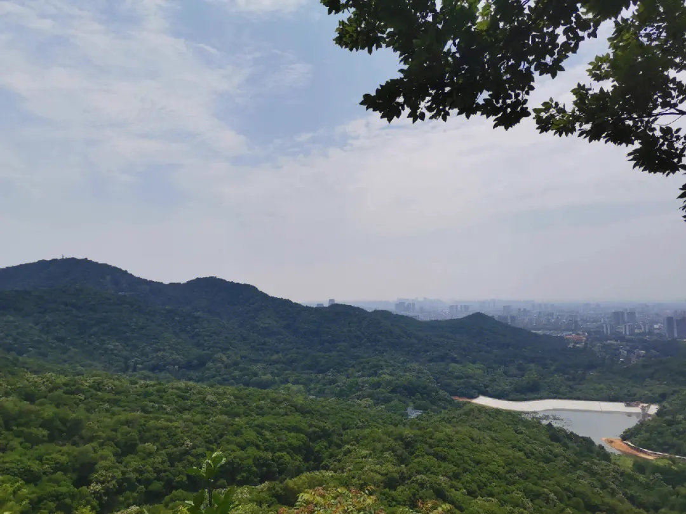

发布者：小海阅读数：679
白云山位于广州市的东北部，地理位置为东经113°17′，北纬23°11′。地形略呈斜长方形，呈东北西南走向，东西宽约4公里，南北长约7公里。山体相当宽阔，由30多座山峰组成，为广东最高峰九连山的支脉。全境面积为28平方公里，其中属特别保护范围的面积为20．98平方公里。《国家级风景名胜区——广州市白云山风景名胜区总体规划（2009-2025）》中，白云山风景名胜区规划麓湖、飞鹅岭、三台岭、鸣春谷、柯子岭、摩星岭、明珠楼及荷依岭等八个景区。
白云山是一个和缓起伏的山块，山块大致作东北西南走向。从高空俯瞰，白云山有点像一个“扁豆荚”，南北长7000多米，中部东西宽4000多米，共有30多个山峰。它的东南和西北坡是一条直线般的长条急坡，这是因为山坡是沿着广从断裂与广州-罗浮山断裂夹角地带的断裂线形成的。也就是说，白云山是断层上升形成的山块：两面下陷，山体上升。
